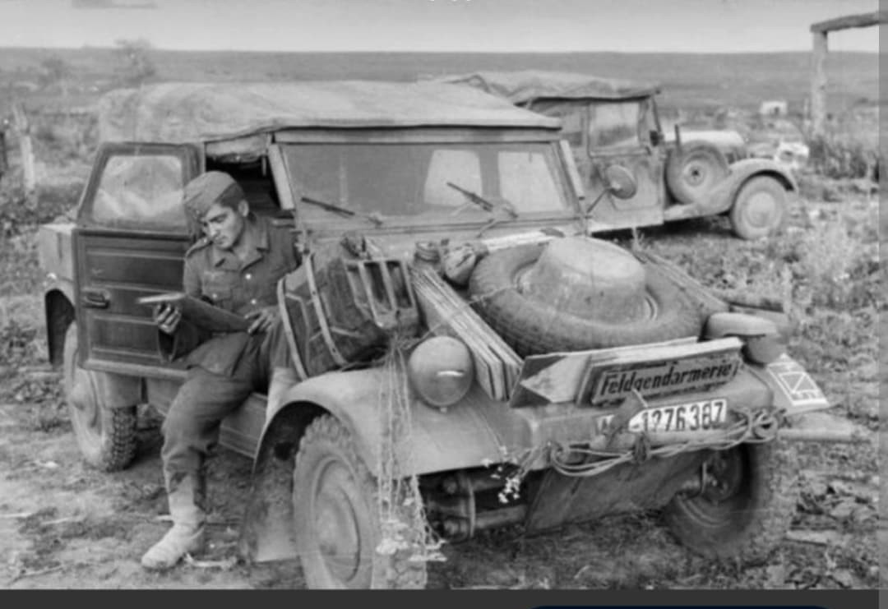
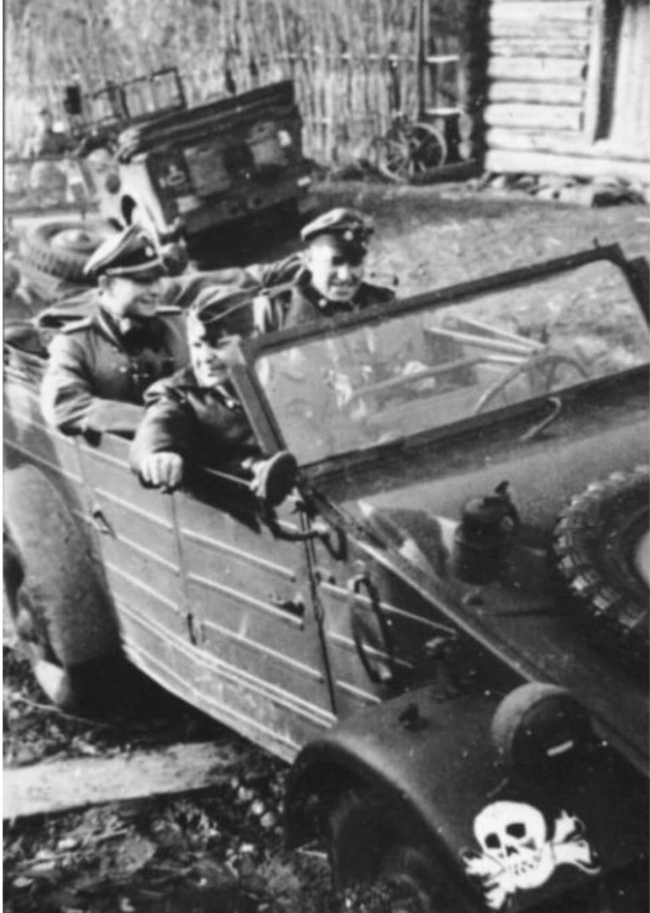
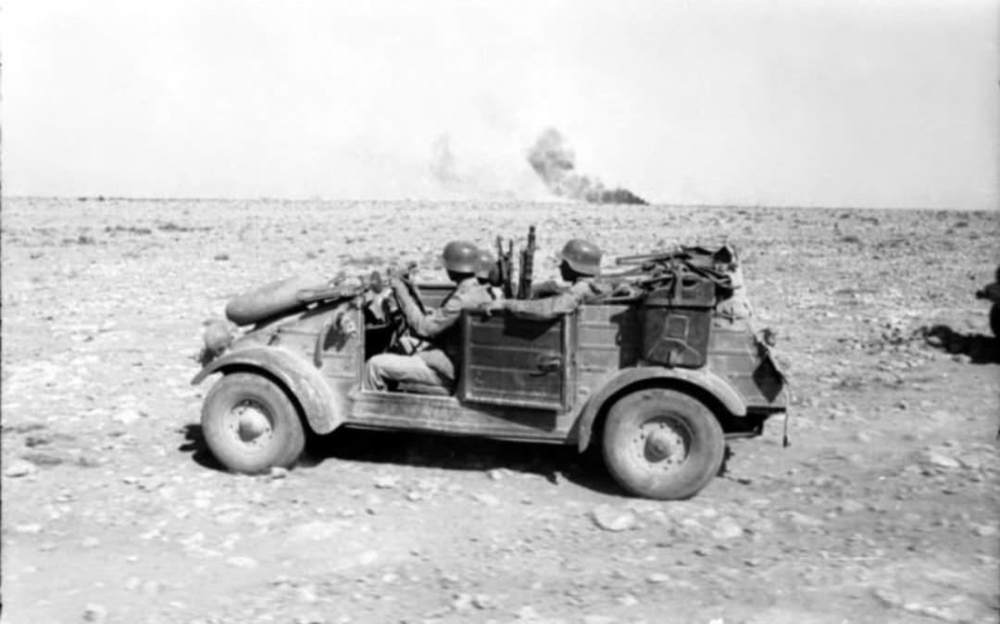

Le véhicule militaire léger tout-terrain emblématique des forces allemandes sur tous les fronts

Équivalent allemand de la célèbre Jeep américaine, le Kübelwagen (Volkswagen Typ 82) est le véhicule militaire léger le plus répandu de la Wehrmacht durant la Seconde Guerre mondiale.
Conçu par l'ingénieur **Ferdinand Porsche**, ce véhicule utilitaire simple, robuste et économique servit d'automobile de liaison, de reconnaissance, de véhicule d'état-major et de transport léger d'officiers et de matériel sur l'ensemble des théâtres d'opérations.
Développé à partir de la plate-forme de la voiture populaire Volkswagen (la future Coccinelle), le Typ 82 se distingue par une carrosserie tôlée renforcée aux lignes très anguleuses, dotée de portes embouties pour en maximiser la rigidité tout en réduisant le poids.
Animé par un moteur 4 cylindres à plat refroidi par air de 985 cm³ (puis 1 131 cm³ développant 25 chevaux) situé à l'arrière, le Kübelwagen ne pesait que 715 kg à vide. Ce refroidissement par air lui conférait une fiabilité exceptionnelle, évitant tout risque de gel en Russie ou de surchauffe dans le désert libyen.

Malgré l'absence de transmission intégrale (2 roues motrices arrière), la combinaison d'un poids plume, d'une excellente garde au sol et d'un différentiel autobloquant offrait au Kübelwagen des capacités tout-terrain remarquables face à la boue et au sable.
De la campagne de France au désert d'Afrique du Nord (au sein de l'**Afrikakorps** où il était particulièrement prisé) jusqu'aux steppes gelées du front de l'Est et au bocage normand, le Kübelwagen s'est imposé comme le cheval de trait mécanique quotidien des troupes allemandes.

Produit à plus de **50 000 exemplaires** entre 1940 et 1945 dans l'usine de Wolfsburg, le Kübelwagen a démontré la pertinence des véhicules légers simplifiés en temps de guerre.
Sa conception mécanique servira directement de base à la création de sa variante amphibie, le **Schwimmwagen (Typ 166)**, et inspirera dans les années 1960 le développement du Volkswagen Type 181 (connu sous le nom de *Thing* ou *Safari*).
Page du Musée HOP WW2 – Section Véhicules Terrestres Allemands